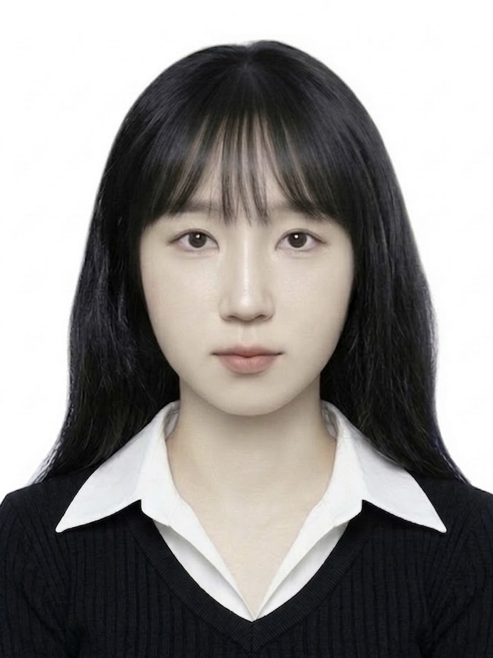

Data Scientist & Research Developer · 수원대학교 데이터과학부
"한 번 같이 일하면 계속 찾게 되는 연구자"
의료·환경·자연어 데이터로 복잡한 현상을 읽어냅니다
수원대학교 데이터과학부에서 데이터 분석, 데이터 전처리, 머신러닝·딥러닝 연구를 수행해왔습니다. 수업 프로젝트부터 서울대병원·가톨릭대병원과의 연구 협업까지 다양한 문제를 다뤄보고 의료, 환경, 스포츠 등 다양한 도메인을 경험하며 데이터 수집부터 전처리, 분석, 모델링, 보고까지 전 과정을 수행해봤습니다. 3학년부터 함께한 지도교수님이 이직 후에도 연구를 이어가며 대학원 진학을 권유해 주셨고, 이를 지켜보신 다른 교수님의 제안으로 4학년부터 두 연구실을 병행했습니다.
시계열 분석, 의료 데이터, 딥러닝 등 다양한 분야의 데이터 프로젝트를 수행했습니다.